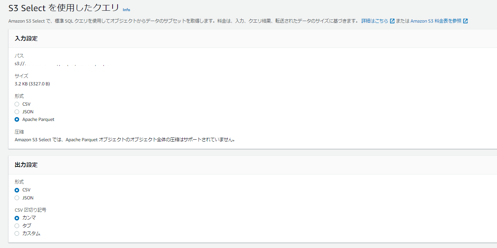

PythonのPyArrorwを使用してCSVをParquetに変換、及び確認
pandasでparquetを扱えることを知った
テスト用CSVの作成
cat << EOF > testdata.csv
1,test1,ゎぶばあちあぬナクバ
2,test2,がマうひバぴじクハぺ
3,test3,スみでてゥあッあけげ
EOF
pyarrowのインストール
pip install pyarrow
csvからparquetへの変換
import pandas as pd
import pyarrow as pa
import pyarrow.parquet as pq
#csvからparquetへの変換
df = pd.read_csv('./testdata.csv')
table = pa.Table.from_pandas(df)
pq.write_table(table, './testdata.parquet')
parquetの内容確認
#parquetの内容確認
load_df_pq = pd.read_parquet("./testdata.parquet")
print(load_df_pq.info())
print(load_df_pq)
AWSのs3 selectでもParquetを簡単に見れて便利


関連しているかもしれない記事
- Windows版 Kindleの自動スクリーンショットツール
- PythonのSeleniumのElementClickInterceptedExceptionエラーを無理矢理回避する
- Amazon EC2上でPython + Seleniumを実行するまで
- pythonの画像処理ライブラリPillow(PIL)を使用して対象ディレクトリ配下の画像ファイル一式に枠を付ける
- Python(pyautogui)とLINE Notifyを利用してWeb画面変化をキャッチしてLINE通知する